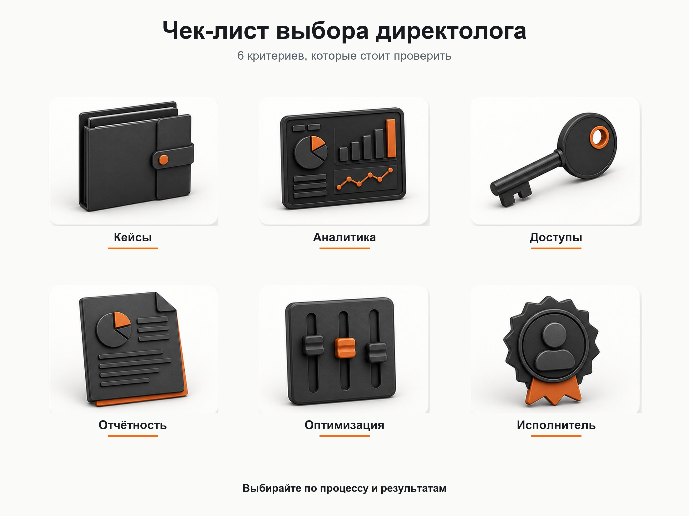
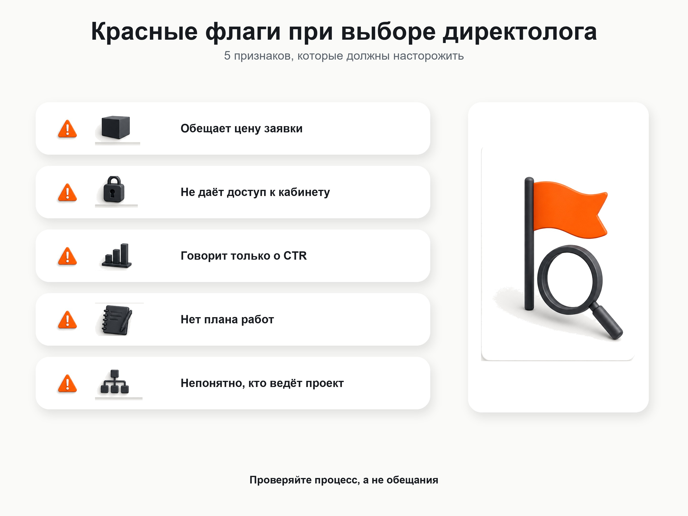

Блог о платном трафике
Как выбрать директолога и не ошибиться со специалистом
Выбирать директолога только по цене, красивой презентации или обещаниям дешёвых заявок не стоит. Гораздо важнее понять, как специалист работает с аналитикой, на основании чего принимает решения, какие результаты может подтвердить и кто фактически будет вести ваш рекламный кабинет.
Хороший директолог должен уметь объяснить свою работу обычным языком. Вы как владелец бизнеса не обязаны разбираться во всех настройках Яндекс Директа, но должны понимать, за что платите и как оценивается результат.

Что должен делать директолог
Работа специалиста не заканчивается после создания рекламных кампаний.
В нормальный процесс входят:
- изучение продукта и целевой аудитории;
- анализ спроса и конкурентов;
- подготовка структуры рекламных кампаний;
- настройка Яндекс Метрики и целей;
- запуск рекламы;
- анализ поисковых запросов и площадок;
- работа со ставками, стратегиями и бюджетами;
- тестирование объявлений, аудиторий и посадочных страниц;
- поиск причин дорогих или некачественных обращений;
- регулярная оптимизация;
- понятная отчётность.
Главная задача не в том, чтобы получить как можно больше кликов. Реклама нужна ради заявок, заказов и продаж.
Сам Яндекс рекомендует при оценке performance-рекламы смотреть на количество привлечённых клиентов, стоимость их привлечения и полученный доход, а не ограничиваться показами и кликами.
Подробнее - в статье «CPA в Яндекс Директе».
1. Посмотрите реальные кейсы
Кейсы полезны, но один красивый скриншот ничего не доказывает.
Хороший кейс должен давать контекст:
- какая была задача;
- что рекламировали;
- какие проблемы были на старте;
- что специалист изменил;
- какие показатели отслеживал;
- какой результат получил.
Особенно полезны проекты из вашей или близкой ниши. Но точное совпадение необязательно.
Например, опыт с длинным циклом сделки в одном B2B-направлении иногда полезнее для другого B2B-проекта, чем опыт с совершенно другим продуктом из той же формальной категории.
Смотрите не только на итоговую цифру, но и на ход работы. Специалист должен понимать, почему получился такой результат.
Примеры работ - на главной странице с кейсами.
2. Проверьте, понимает ли специалист экономику бизнеса
Перед настройкой рекламы директолог должен задать вопросы.
Например:
- что именно вы продаёте;
- кто ваш клиент;
- какой средний чек;
- какие товары или услуги наиболее выгодны;
- откуда сейчас приходят продажи;
- что считается целевой заявкой;
- какие обращения считаются некачественными;
- есть ли CRM;
- можно ли связать рекламу с фактическими продажами.
Если разговор начинается сразу с количества ключевых слов, объявлений и кампаний, а о бизнесе вопросов почти нет, это плохой признак.
Яндекс Директ является лишь источником трафика. Даже технически хорошо настроенная реклама может работать плохо из-за предложения, цены, сайта, отдела продаж или неправильной аналитики.
3. Узнайте, как будет настроена аналитика
До запуска должно быть понятно, по каким данным специалист собирается принимать решения.
Для простого проекта может хватить Яндекс Метрики с корректно настроенными целями. Для более сложной воронки могут понадобиться CRM, коллтрекинг, передача офлайн-конверсий и дополнительные системы аналитики.
Набор инструментов зависит от бизнеса.
Главное, чтобы рекламная система получала данные о действительно полезных действиях пользователей, а специалист мог отличать целевые обращения от формальных конверсий.
Если вам обещают оптимизировать рекламу по заявкам, но при этом никто не проверил цели и не обсудил аналитику, возникает логичный вопрос: по каким данным будет выполняться эта оптимизация?
4. Спросите, что специалист будет делать после запуска
Одна из частых ошибок при выборе подрядчика - воспринимать настройку Яндекс Директа как разовую работу.
Кампании запускаются, после чего начинается накопление реальных данных.
Появляются:
- поисковые запросы;
- статистика по аудиториям;
- результаты разных объявлений;
- конверсии;
- данные по устройствам и регионам;
- эффективные и неэффективные площадки;
- информация о качестве обращений.
На основании этих данных кампании нужно дорабатывать.
Поэтому вопрос «Что вы будете делать после запуска?» намного полезнее вопроса «Сколько объявлений вы создадите?».
Хороший ответ должен содержать понятный процесс анализа, тестирования гипотез и оптимизации.
5. Проверьте, как устроена отчётность
Отчёт не должен выглядеть как набор цифр из рекламного кабинета.
Если за месяц вам показывают только:
- показы;
- клики;
- CTR;
- среднюю цену клика;
понять результат бизнеса по такому отчёту невозможно.
Для большинства проектов намного полезнее видеть:
- расход;
- количество целевых обращений;
- стоимость обращения;
- динамику результатов;
- качество лидов, если эти данные доступны;
- продажи и выручку, если настроена соответствующая аналитика;
- какие изменения были сделаны;
- что специалист планирует проверить дальше.
Цифры должны сопровождаться выводами.
Иначе заказчик получает статистику, но не понимает, что происходит с рекламой.

6. Рекламный кабинет должен оставаться под вашим контролем
Не соглашайтесь на схему, при которой вся реклама находится в неизвестном аккаунте подрядчика, а вы видите только периодические отчёты.
У вас должен оставаться доступ к кампаниям и статистике.
В Яндекс Директе для совместной работы предусмотрены представители с полным доступом или правами только на просмотр. Яндекс также рекомендует использовать аккаунты, зарегистрированные самим рекламодателем.
Это позволяет сменить подрядчика без потери истории кампаний и данных.
7. Узнайте, кто фактически будет вести рекламу
Этот вопрос особенно важен при работе с агентствами и специалистами, у которых много проектов.
Вы можете общаться и заключать договор с опытным экспертом, а после оплаты кабинет передадут младшему сотруднику.
Поэтому заранее спросите:
- кто будет настраивать кампании;
- кто будет заниматься оптимизацией;
- с кем вы будете общаться;
- сколько проектов одновременно ведёт этот человек.
Если выбираете частного специалиста, преимущество такого формата как раз в возможности работать непосредственно с исполнителем. Я свои проекты веду лично, без передачи помощникам или ученикам.
8. Не выбирайте специалиста только по цене
Стоимость услуг имеет значение, но сама по себе практически ничего не говорит о качестве работы.
Очень высокая цена не гарантирует результата. Низкая цена тоже необязательно означает плохого специалиста.
Сравнивать предложения лучше по совокупности факторов:
| Что сравнивать | На что смотреть |
|---|---|
| Опыт | Какие задачи специалист реально решал |
| Кейсы | Есть ли контекст и измеримые результаты |
| Аналитика | Как будут отслеживаться заявки и продажи |
| Ведение | Что происходит после запуска |
| Отчёты | Какие показатели и выводы вы получаете |
| Коммуникация | Кто и как быстро отвечает за проект |
| Доступы | Остаётся ли кабинет под вашим контролем |
| Цена | Соответствует ли она объёму работ |
9. Осторожнее с гарантиями результата
До запуска невозможно честно гарантировать конкретную стоимость заявки или количество продаж.
На результат влияет слишком много факторов:
- конкуренция;
- спрос;
- рекламный бюджет;
- сайт;
- предложение;
- цены;
- сезонность;
- география;
- работа менеджеров;
- качество продукта.
Можно определить целевые показатели и работать в их направлении. Но фраза вроде «гарантирую заявки по 500 рублей» до анализа проекта должна скорее насторожить.
Хороший специалист обычно говорит о прогнозах, тестах и возможных сценариях, а не обещает цифру, которую якобы может обеспечить при любых условиях.
Какие вопросы задать директологу перед началом работы
Для первого разговора достаточно нескольких вопросов.
- С какими похожими проектами вы работали?
- Можете показать несколько кейсов и объяснить, что конкретно там делали?
- Какие данные вам нужны перед запуском?
- Как вы определите, хорошо или плохо работает реклама?
- Как будет настроено отслеживание заявок?
- Что вы обычно анализируете после запуска?
- Как часто оптимизируете кампании?
- В каком виде я буду получать отчёт?
- Кто непосредственно будет работать с моим проектом?
- Кабинет и накопленная статистика останутся у меня?
- Что входит в стоимость работы?
- Что вы будете делать, если стоимость заявки окажется выше ожидаемой?
Здесь важны не «правильные» профессиональные термины.
Смотрите, способен ли человек спокойно и понятно объяснить свой подход.
Нужно ли смотреть сертификат Яндекса
Сертификат можно учитывать как дополнительный аргумент, но делать его главным критерием выбора не стоит.
У Яндекса есть каталог специалистов по настройке Директа. По информации самого Яндекса, специалисты, попадающие в этот список, проходят проверку знаний и оценку качества настроенных кампаний.
Это полезный сигнал, но сертификат не показывает, насколько хорошо человек понимает конкретно ваш бизнес, умеет работать с аналитикой и способен стабильно вести проект.
Практический опыт и качество работы важнее самого документа.
Нужен ли опыт именно в вашей нише
Желательно посмотреть проекты из похожих направлений, но искать специалиста исключительно с кейсом один в один не нужно.
Иногда это даже чрезмерно ограничивает выбор.
Гораздо важнее, чтобы человек уже работал с похожей моделью бизнеса:
- B2B или B2C;
- короткий или длинный цикл сделки;
- интернет-магазин или услуги;
- локальный или федеральный проект;
- низкий или высокий средний чек;
- простая заявка или сложная многоэтапная продажа.
Специалист должен уметь разбираться в новой нише, а не механически переносить настройки из предыдущего кабинета.
Нужен ли тестовый аудит
Небольшой предварительный разбор существующей рекламы может быть полезен.
Но бесплатный аудит сам по себе не является доказательством квалификации.
Часто до начала полноценной работы невозможно сделать глубокие выводы без статистики, понимания бизнеса, CRM и информации о качестве лидов.
Лучше оценить не количество найденных «ошибок», а то, насколько логично специалист объясняет проблему и предлагает её проверять.
Директолог или агентство
Однозначно лучшего варианта нет.
Частный директолог обычно подходит, когда нужен прямой контакт с исполнителем и проект не требует большой команды.
Агентство может быть удобнее, если одновременно нужны разные специалисты: реклама, аналитика, дизайн, разработка, CRM и другие работы.
При выборе агентства особенно важно выяснить, кто именно получит ваш проект после подписания договора.
Название компании само по себе рекламу не ведёт. Результат всё равно зависит от конкретных людей.

Красные флаги при выборе директолога
Я бы насторожился, если специалист:
- гарантирует конкретную стоимость заявки до анализа проекта;
- обещает результат практически сразу;
- не задаёт вопросов о продукте и продажах;
- не интересуется аналитикой;
- не хочет давать доступ к рекламному кабинету;
- говорит о «секретных настройках», которые нельзя показывать клиенту;
- оценивает результат исключительно по CTR и кликам;
- не может объяснить, что будет делать после запуска;
- предлагает настроить рекламу один раз и больше её не трогать;
- уклоняется от вопроса, кто фактически будет вести проект.
Один отдельный пункт ещё не означает, что перед вами плохой специалист. Но несколько таких признаков одновременно являются серьёзным поводом поискать другого исполнителя.
Как выбрать директолога: короткий чек-лист
Перед заключением договора проверьте шесть вещей:
- Есть ли у специалиста понятные реальные кейсы.
- Понимает ли он вашу бизнес-задачу.
- Продумана ли аналитика.
- Есть ли план работы после запуска.
- Сохраняете ли вы доступ к рекламе и статистике.
- Понятно ли, кто непосредственно отвечает за проект.
Если по всем этим пунктам есть конкретные ответы, вероятность нормальной совместной работы намного выше, чем при выборе по рейтингу, стоимости или красивой презентации.
Главный критерий прост: хороший директолог способен объяснить, как реклама должна превратиться в измеримый результат бизнеса и что он будет делать, если первоначальный план не сработает.
Подробнее об услугах и кейсах - на главной странице.